History Of Inventing Numbers (সংখ্যা পদ্ধতি আবিস্কারের ইতিহাস)
Conversion Of Numbers (সংখ্যা পদ্ধতির রূপান্তর)
Addition and Subtraction In Binary System (বাইনারি যোগ বিয়োগ)
Signed Numbers (চিহ্নযুক্ত সংখ্যা)
Code (কোড)
Number System
Number System History


সংখ্যাকে প্রকাশ করার এবং গণনা করার পদ্ধতিকে সংখ্যা পদ্ধতি বলে।
সংখ্যাকে প্রকাশ করার জন্য বিভিন্ন প্রতীক বা চিহ্ন ব্যবহার করা হয়।
এই প্রতীকগুলোকে দুটো ভিন্ন ভিন্ন পদ্ধতিতে ব্যবহার করা যায়।


সংখ্যা পদ্ধতিকে পজিশনাল (Positional) এবং নন-পজিশনাল (Non-Positional ) এই দুটি মূল পদ্ধতিতে ভাগ করা যায়।
নন- পজিশনাল সংখ্যা পদ্ধতি : এই পদ্ধতিতে প্রতীক বা চিহ্নগুলো যেখানেই ব্যবহার করা হোক, তার মান একই থাকবে।
রোমান সংখ্যা হচ্ছে নন-পজিশনাল (Non positional) সংখ্যার উদাহরণ।
যেমন- রোমান সংখ্যায় 5 বোঝানোর জন্য V ব্যবহার করা হয়।
V, VI কিংবা VII এই তিনটি উদাহরণে v তিনটি ভিন্ন জায়গায় বসেছে, কিন্তু প্রতি ক্ষেত্রেই V চিহ্নটি 5 বুঝিয়েছে।
তথা পজিশনাল সংখ্যা পদ্ধতির ন্যায় / যতই ডান হতে বাম দিকে সরতে (স্থান পরিবর্তন) থাকুক না কেন তার স্থানীয় মানের (একক, দশক, শতক ইত্যাদির ন্যায়) কোন পরিবর্তন হয় না।
এর কারণ হলো নন-পজিশনাল (অস্থানিক) সংখ্যা পদ্ধতিতে স্থানিক মানের অনুপস্থিতি।
প্রাচীনকালে যখন সংখ্যাতত্ত্ব সেভাবে গড়ে উঠেনি তখন নন-পজিশনাল সংখ্যা পদ্ধতির প্রচলন ছিল।
পজিশনাল সংখ্যা পদ্ধতি : এই পদ্ধতিতে চিহ্ন বা প্রতীকটিকে কোন অবস্থানে ব্যবহার করা হচ্ছে তার উপর মানটি নির্ভর করে।
আধুনিক সংখ্যাতত্ত্ব গড়ে উঠার পর পজিশনাল (Positional) সংখ্যা পদ্ধতির প্রচলন শুরু হয়েছে।
আমাদের প্রচলিত দশমিক পদ্ধতি হচ্ছে পজিশনাল সংখ্যা পদ্ধতির উদাহরণ। কারণ 555 সংখ্যাকে ডান দিকের প্রথম অঙ্কটি 5 সংখ্যাকে বোঝালেও তার বামেরটি 50 এবং এর বামেরটি 500 সংখ্যাকে বোঝাচ্ছে।
এটি 10 ভিত্তিক সংখ্যা এবং প্রত্যেকটি অবস্থানের একটি মান রয়েছে।
ডান দিকের প্রথম অঙ্কটির মান 1, বামেরটি 10, এর বামেরটি 100 এভাবে আগের অবস্থান থেকে আগের অবস্থান সবসময়েই 10 গুণ বেশি।
যদি এটি ৪ ভিত্তিক সংখ্যা হতো তাহলে পরের অবস্থান আগের অবস্থান থেকে ৪ গুণ বেশি হতো।
16 ভিত্তিক সংখ্যা হলে প্রতিটি অবস্থান আগের অবস্থান থেকে 16 গুণ বেশি হতো।
Binary
Octal
Decimal
Hexa-decimal
বাইনারি সংখ্যা পদ্ধতি বা দ্বিমিক সংখ্যা পদ্ধতি (ইংরেজি: Binary number system) একটি সংখ্যা পদ্ধতি যাতে সকল সংখ্যাকে কেবলমাত্র ০ এবং ১ দিয়ে প্রকাশ করা হয়।
এই সংখ্যা পদ্ধতির ভিত্তি দুই।
ডিজিটাল ইলেকট্রনিক যন্ত্রপাতির লজিক গেটে এই সংখ্যাপদ্ধতির ব্যাপক প্রয়োগ রয়েছে। তাছাড়া প্রায় সকল আধুনিক কম্পিউটারে বাইনারি সংখ্যা পদ্ধতি ব্যবহার করা হয়।
বাইনারি পদ্ধতিতে প্রতিটি অঙ্ককে বিট বলা হয়।
Bi শব্দের অর্থ ২
Binary = 2 (অতএব বাইনারি বলতে আমরা ২ বুঝি)
Binary Base = 2 [0,1]
Power Of 2

579 (10) = Five Hundred Seventy Nine
579 (8) = Five, Seven, Nine
Base(ভিত্তি) না দিলে কোন নাম্বার সিস্টেম বুঝা যাবে না।
যেমন '101' এটা বাইনারি, অক্টাল, ডেসিমাল, হেক্সা-ডেসিমাল সবই হতে পারে।


Integer (পূর্ণসংখ্যা) & Fraction (ভগ্নাংশ)
Radix Point = . Example : 5.5
Base (ভিত্তি) দিতে হবে। এবং সঠিক টাই দিতে হবে।
Binary Digits উঠানোর সময় তাড়াহুড়া করে ভুল করা যাবে না।
LSB & MSB
(Left - Right)
(Right - Left)
(Up - Down)
(Down - Up)
Binary Math করার সময় খাতা Landscape করে নিতে হবে।
All digits are individual except Decimal Number System
Example : 10 (16) = 1,0 Not 10
D-B / D-O / D-H.D / B-D / O-D / H.D-D (এসব Conversion Base দিয়ে করতে হবে)
যেহেতু Decimal Number Base মূলহীন (এক্ষেত্রে) তাই অন্য Number System Base ব্যাবহার করতে হবে।
Base যদি সমান চিহ্নের (Equal-Sign) বামে হয় তবে গুন করতে হবে ।
আর যদি ডানে হয় তবে ভাগ করতে হবে।
B-O / O-B / B-H.D / H.D-B (এসব Conversion করার সময় 'Power Of 2') ব্যাবহার করতে হবে।
O-B / B-O করার সময় '4-2-1' এর মাধ্যমে করতে হবে।
H.D-B / B-H.D করার সময় '8-4-2-1' এর মাধ্যমে করতে হবে।
1 Octal Digit = Binary 3 Digits
Example : 5 = 101
Or
3 Binary Digits = 1 Octal Digit
Example : 101 = 5
1 Hexa-decimal Digit = Binary 4 Digits
Example : 5 = 0101
Or
4 Binary Digits = Hexa-decimal Digit
Example : 0101 = 5
Find-out Decimal Value From Binary Without Power Of 2
Hexa-Decimal Value Carefully Write
😍 - Math Equation
5 = 05 (Same)
5 = 50 (Not Same)
.5 = 0.5 (Same)
.5 = .50 (Same)
.5 = .05 (Not Same)
Conversion Of Numbers (সংখ্যা পদ্ধতির রূপান্তর)
| Number System | Set Of Digits | Base (ভিত্তি) | Example(s) |
|---|---|---|---|
| Base-2 | 0,1 | 2 | 101 (2) |
| Base-3 | 0,1,2 | 3 | 121 (3) |
| Base-4 | 0,1,2,3 | 4 | 33 (4) |
| Base-5 | 0,1,2,3,4 | 5 | 1234 (5) |
| Base-6 | 0,1,2,3,4,5 | 6 | 154(6) |
| Base-7 | 0,1,2,3,4,5,6 | 7 | 564(7) |
| Base-8 | 0,1,2,3,4,5,6,7 | 547 | 101 (8) |
| Base-9 | 0,1,2,3,4,5,6,7,8 | 9 | 780(9) |
| Base-10 | 0,1,2,3,4,5,6,7,8,9 | 10 | 890(10) |
Conversion Of Numbers (সংখ্যা পদ্ধতির রূপান্তর)
| Decimal - Binary |
| Decimal - Octal |
| Decimal - Hexa-decimal |
| Binary - Decimal |
| Octal - Decimal |
| Hexa-decimal - Decimal |
| Binary - Octal |
| Binary - Hexa-decimal |
| Octal - Binary |
| Hexa-decimal - Binary |
| Octal - Hexa-decimal |
| Hexa-decimal - Octal |
Number System (Addition + Subtruction + Multiplication + Division)
Number System Base (ভিত্তি)
যোগফল যদি ভিত্তির সমান / বেশি (>=) হয়, তবে ভিত্তির সাথে বিয়োগ করতে হবে।
যতবার বিয়োগ হবে বামে যোগ হবে। অর্থাৎ একবার বিয়োগ হলে বামে ১ যোগ হবে, দুইবার বিয়োগ হলে বামে ২ যোগ হবে।
এক সংখ্যা পদ্ধতি থেকে অন্য সংখ্যা পদ্ধতি কে যোগ, বিয়োগ করা যায় না। (করতে চাইলে যে কোনো এক পদ্ধতিতে Convert করতে হবে।)

Binary Addition Example : 1 1 1 1 1 A = 10
B = 11
C = 12
D = 13
E = 14
F = 15
রাহুল প্রাক নির্বাচনী পরীক্ষায় পেয়েছে (A2.8016)
এবং নির্বাচনী পরীক্ষায় পেয়েছে (57.528)|
সে সর্বমোট কত পেয়েছে দশমিক সংখ্যায় প্রকাশ কর।
A2.08 (16) = ? (2) 57.52 (8) = ? (2)
86 (10) + 1010010 (2) + A26 (16)


1 1 0 1 * 1 0 1
1 1 0 ) 1 0 1 0 1 0 (
Complement

Equation (Plus)

Equation (Minus)

Bit
Decimal To Binary
Binary Addition
Sign Bit
Carry Bit / Carry Overflow
1's Compliment (0➡️1)&(1➡️0)
2's Compliment💡
1-2's Compliment (২ এর পরিপূরক)
2-Plus To Minus / Minus To Plus (করার ক্ষেত্রে দরকার হয়)
3-১ এর পরিপূরকের সঙ্গে ১ যোগ করে সাধারণত করা হয়।
তবে শর্টকাট নিয়মেও করা যায়।
(+5) + (-5) Same
Rules (For Addition & Sub.. উপরে লিখা আছে)
Equation
Others Number System
CoDe

On Keyboard :
Letter
Digits / Number
Numeric Sign / Number sign
Special Characters
বিভিন্ন বর্ণ, অংক, গাণিতিক চিহ্ন এবং বিশেষ চিহ্ন গুলো CPU কে বোঝানোর জন্য
যে বাইনারি বিন্যাস ব্যবহৃত হয় তাকে কোড বা তথ্য সংকেত বলা হয়।
বিঃ দ্রঃ=কম্পিউটার কোড কে অনেক সময় বাইনারি কোড ও বলা
২ প্রকার
উত্তরঃ ক্যালকুলেটর, ডিজিটাল ঘড়ি ও ভোল্টমিটার প্রভৃতিতে BCD কোড ব্যবহৃত হয়।
উত্তরঃ BCD 8421 কে বলা হয় NBCD (Natural BCD)।
উত্তরঃ AnsWer
উত্তরঃ AnsWer
উত্তরঃ না।
Diffrence Between BCD & Binary Code


Definition (10)
Full - Form (5)
Difference
Practical
Board Questions Solve
?
Digital Device

এটি হলো গণিতের অন্যতম পুরাতন একটি শাখা। এই শাখায় গণিতের বিভিন্ন সমস্যার সমাধান
যোগ,বিয়োগ,গুণ ও ভাগের মাধ্যমে করা হয়।
গণিতের যে শাখায় গাণিতীক সমীকরণের অজানা রাশি প্রতীকের সাহায্যে প্রকাশ করা হয় তাকে বীজগণিত বলে।
গণিত ও যুক্তির ওপর ভিত্তি করে যে অ্যালজেবরা তাকে বুলিয়ান অ্যালজেবরা বলা হয়।
বুলিয়ান অ্যালজেবরার উদ্ভাবক হলেন প্রখ্যাত ইংরেজ গণিতবিদ জর্জ বুল।
জর্জ বুল সর্বপ্রথম গণিত ও যুক্তির মধ্যে সম্পর্ক আবিষ্কার করেন এবং গণিত ও যুক্তির ওপর ভিত্তি করে এক ধরণের অ্যালজেবরা তৈরি করেন, যাকে বুলিয়ান অ্যালজেবরা বলা হয়।
বুলিয়ান অ্যালজেবরা মূলত লজিকের সত্য অথবা মিথ্যা এ দুটি স্তরের উপর ভিত্তি করে তৈরি করা হয়েছে।
অপরদিকে সকল ডিজিটাল ডিভাইস বাইনারি পদ্ধতিতে কাজ করে।
এই ডিজিটাল ডিভাইসে গাণিতিক ও যুক্তিমূলক কাজ করার জন্য বুলিয়ান অ্যালজেবরা ব্যবহৃত হয়।
বুলিয়ান অ্যালজেবরার সত্য ও মিথ্যাকে যথাক্রমে বাইনারি “১“ এবং “০” দ্বারা পরিবর্তন করে ডিজিটাল ডিভাইসের সকল গাণিতিক সমস্যা বুলিয়ান অ্যালজেবরার সাহায্যে সমাধান সম্ভব হয়।
ডিজিটাল ডিভাইসে কোনো সার্কিটে বিদ্যুতের উপস্থিতিকে ১ ধরা হয় এবং বিদ্যুতের অনুপস্থিতিকে ০ ধরা হয়।
ডিজিটাল সিস্টেমে ভোল্টেজ লেভেল ০ থেকে .৮ ভোল্টকে লজিক ০ ধরা হয়
এবং ভোল্টেজ লেভেল ২ থেকে ৫ ভোল্টকে লজিক ১ ধরা হয়।
ডিজিটাল সিস্টেমে +০.৮ ভোল্ট থেকে +২ ভোল্ট লেভেল সংজ্ঞায়িত নয় বিধায় ব্যবহার করা হয় না।
1854 সালে ইংরেজ গণিতজ্ঞ জর্জ বুলি সর্বপ্রথম বুলিয়ান অ্যালজেবরা নিয়ে আলোচনার করেন।
0 & 1 শুধু এই দুটি অংক ব্যাবহার হয়।
ভগ্নাংশ / দশমিক অংক / সংখ্যা ব্যাবহার হয় না।
ত্রিকোণমিতি / জ্যামিতিক সূত্র ব্যাবহার হয় না।
শুধু ৩টি Operation (ক্রিয়া) করা যায়। (যোগ, গুণ, পূরক)
এটা সহয।
Boolean-Alzebra এর বৈশিষ্ট্য দ্বারা পার্থক্য নির্ণয় করতে হবে।
বুলিয়ান অ্যালজেবরায় যে রাশির মান পরিবর্তনশীল তাকে বুলিয়ান চলক বলে।
যেমন- Y = A + 0 + 1, এখানে A হচ্ছে চলক।
চলকের মান ০ অথবা ১ হতে পারে। অর্থাৎ চলকের মান স্থির থাকে না।
Example: A, B, C...
বুলিয়ান অ্যালজেবরায় যে রাশির মান অপরিবর্তনশীল থাকে তাকে বুলিয়ান ধ্রুবক বলে।
যেমন- Y = A+ 0 + 1, এখানে 0 এবং 1 হচ্ছে বুলিয়ান ধ্রুবক।
বুলিয়ান অ্যালজেবরায় যেকোনো চলকের মান ০ অথবা ১ হয়।
এই ০ এবং ১ কে একটি অপরটির বুলিয়ান পূরক বলা হয়।
বুলিয়ান পূরকে ‘–’ চিহ্নের মাধ্যমে প্রকাশ করা হয়।
গণিতের ভাষায় লেখা হয় A এর পূরক A′।
অপারেটরঃ ৩টি- AND ( . ), OR ( + ), NOT( ¯ ).
বুলিয়ান অ্যালজেবরার মৌলিক অপারেশন ৩টি। যথা –
অ্যান্ড অপারেশন (AND Operation) বা যৌক্তিক গুণ (Logical Multiplication)
অর অপারেশন (OR Operation) বা যৌক্তিক যোগ (Logical Addition)
নট অপারেশন (NOT Operation) বা যৌক্তিক পূরক (Logical Inversion)
বুলিয়ান অ্যালজেবরায় সমস্ত গাণিতিক কাজ শুধুমাত্র যৌক্তিক যোগ, গুণ ও পূরকের সাহায্যে করা হয়।
বুলিয়ান অ্যালজেবরায় যৌক্তিক যোগ, গুণ ও পূরকের নিয়মগুলোকে বুলিয়ান স্বতঃসিদ্ধ বলে।
বুলিয়ান স্বতঃসিদ্ধ গুলো-
যোগের বুলিয়ান স্বতঃসিদ্ধ (Boolean Postulates of OR)
গুণের বুলিয়ান স্বতঃসিদ্ধ (Boolean Postulates of AND)
পূরকের বুলিয়ান স্বতঃসিদ্ধ (Boolean Postulates of NOT)
যৌক্তিক যোগের সময় বুলিয়ান অ্যালজেবরা যেসব নিয়ম মেনে চলে তাকে যোগের বুলিয়ান স্বতঃসিদ্ধ বলে।
যৌক্তিক যোগের সময় বুলিয়ান চলকগুলোর মানের মধ্যে OR(+) অপারেটর ব্যবহার করা হয় তা প্রচলিত যোগের চিহ্ন নয়।
বুলিয়ান অ্যালজেবরায় এ যোগ চিহ্নকে যৌক্তিক যোগ হিসেবে ব্যবহার করা হয়।
যৌক্তিক যোগের চারটি নিয়ম প্রচলিত। যথা−
0 + 0 = 0
0 + 1 = 1
1 + 0 = 1
1 + 1 = 1
উপরের বুলিয়ান স্বতঃসিদ্ধ থেকে বলা যায় যে, বুলিয়ান অ্যালজেবরায় যৌক্তিক যোগের ক্ষেত্রে যেকোনো একটির মান ১ হলে যৌক্তিক যোগফল ১ হবে, অন্যথায় ০ হবে।
যৌক্তিক গুণের সময় বুলিয়ান অ্যালজেবরা যেসব নিয়ম মেনে চলে তাকে গুণের বুলিয়ান স্বতঃসিদ্ধ বলে।
যৌক্তিক গুণের সময় বুলিয়ান চলকগুলোর মানের মধ্যে AND(.) অপারেট ব্যবহার করা হয়।
যৌক্তিক গুণের চারটি নিয়ম প্রচলিত। যথা:
0 . 0 = 0
0 . 1 = 0
1 . 0 = 0
1 . 1 = 1
উপরের বুলিয়ান স্বতঃসিদ্ধ থেকে বলা যায় যে, বুলিয়ান অ্যালজেবরায় যৌক্তিক গুণের ক্ষেত্রে যেকোনো একটির মান ০ হলে যৌক্তিক গুণফল ০ হবে, অন্যথায় ১ হবে।
যৌক্তিক পূরকের সময় বুলিয়ান অ্যালজেবরা যেসব নিয়ম মেনে চলে তাকে পূরকের বুলিয়ান স্বতঃসিদ্ধ বলে।
যৌক্তিক পূরকের সময় বুলিয়ান চলকগুলোর উপর পূরক চিহ্ন ( ¯ ) ব্যবহার করা হয়।
বুলিয়ান অ্যালজেবরায় যৌক্তিক পূরকের ক্ষেত্রে ০ থাকলে ১ হয়, এবং ১ থাকলে ০ হয়।
1 = 0
0 = 1
বুলিয়ান অ্যালজেবরায় ব্যবহৃত সকল উপপাদ্য বা সমীকরণ যে দুটি নিয়ম মেনে একটি বৈধ্য সমীকরণ হতে অপর একটি বৈধ্য সমীকরণ নির্ণয় করা যায় তাকে বুলিয়ান দ্বৈতনীতি বলে।
অর্থাৎ বুলিয়ান অ্যালজেবরায় অর (OR) এবং অ্যান্ড (AND) এর সাথে সম্পর্কযুক্ত সকল উপপাদ্য বা সমীকরণ দ্বৈতনীতি মেনে চলে।
এ নিয়ম দু টি হলো −
১। ০ এবং ১ পরস্পর বিনিময় করে অর্থাৎ ০ এর পরিবর্তে ১ এবং ১ এর পরিবর্তে ০ ব্যবহার করে।
২। OR (+) এবং AND (.) পরস্পর বিনিময় করে অর্থাৎ OR (+) এর পরিবর্তে AND (.) এবং AND (.) এর পরিবর্তে OR (+) ব্যবহার করে।
উদাহরণ: ১ + ১ = ১ সমীকরণে ১ এর পরিবর্তে ০ এবং (+) এর পরিবর্তে (.) বসিয়ে পাই ০.০ = ০ এটাও একটি বৈধ্য সমীকরণ। আবার ০.১ = ০ সমীকরণে ০ এর পরিবর্তে ১ ও ১ এর পরিবর্তে ০ এবং (.) এর পরিবর্তে (+) বসিয়ে পাই ১ + ০ =১ এটাও একটি বৈধ্য সমীকরণ।
?
?
?
?
?
০ ০ ১ ১
০ ০ ০ ০ ১ ১ ১ ১)
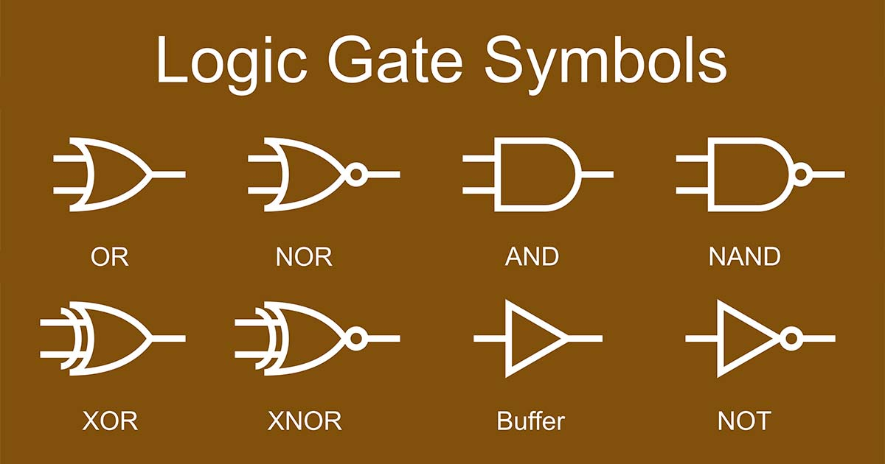
OR Gate
AND Gate
NOT Gate
অর্থাৎ বুলিয়ান অ্যালজেবরায় যৌক্তিক যোগের কাজ সম্পাদনের জন্য যে গেইট ব্যবহার করা হয়, তাকে OR গেইট বলা হয়।
OR গেইটে দুই বা ততোধিক ইনপুট লাইন থাকে এবং একটিমাত্র আউটপুট লাইন থাকে।
যেহেতু OR গেইট যৌক্তিক যোগের গেইট তাই এটি যৌক্তিক যোগের নিয়ম মেনে চলে।
অর্থাৎ এই গেইটের ক্ষেত্রে যেকোনো একটি ইনপুটের মান ১ হলে আউটপুট ১ হয়, অন্যথায় ০ হয়।
OR গেইটের সুইচিং সার্কিটের সুইচগুলো সমান্তরালে সমবায়ে যুক্ত থাকে। ফলে যেকোন একটি সুইচ অন(1) থাকলে বাল্বটি জ্বলে।

অর্থাৎ বুলিয়ান অ্যালজেবরায় যৌক্তিক গুণের কাজ সম্পাদনের জন্য যে গেইট ব্যবহার করা হয়, তাকে AND গেইট বলা হয়।
AND গেইটের ক্ষেত্রে দুই বা ততোধিক ইনপুট লাইন থাকে এবং একটি মাত্র আউটপুট লাইন থাকে।
যেহেতু AND গেইট যৌক্তিক গুণের গেইট তাই এটি যৌক্তিক গুণের নিয়ম মেনে চলে।
অর্থাৎ এই গেইটের ক্ষেত্রে যেকোনো একটি ইনপুটের মান ০ হলে আউটপুট ০ হয়, অন্যথায় ১ হয়।
AND গেইটের সুইচিং সার্কিটের সুইচগুলো শ্রেণি সমবায়ে যুক্ত থাকে। ফলে যেকোন একটি অফ(0) থাকলে বাল্বটি জ্বলে না।
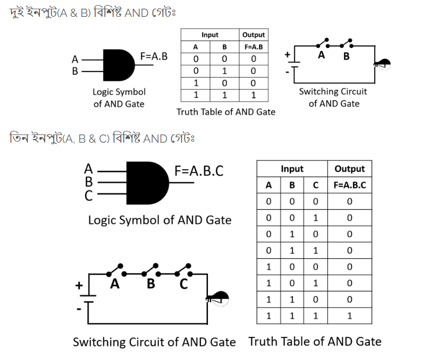
একে ইনভার্টার ও বলা হয়।
অর্থাৎ বুলিয়ান অ্যালজেবরায় যৌক্তিক পূরকের কাজ সম্পাদনের জন্য যে গেইট ব্যবহার করা হয়, তাকে NOT গেইট বলা হয়।
এই গেইটে একটি মাত্র ইনপুট লাইন এবং একটি মাত্র আউটপুট লাইন থাকে।
যেহেতু NOT গেইট যৌক্তিক পূরকের গেইট তাই এটি যৌক্তিক পূরকের নিয়ম মেনে চলে।
এই গেইটের ক্ষেত্রে আউটপুট হয় ইনপুটের বিপরীত। অর্থাৎ ইনপুট সংকেত ১ হলে আউটপুট সংকেত ০ হয় অথবা ইনপুট সংকেত ০ হলে আউটপুট সংকেত ১ হয়।
NOT গেইটের সুইচিং সার্কিটে একটিমাত্র সুইচ থাকে যা বাল্ব এর সাথে সমান্তরাল সমবায়ে যুক্ত থাকে। ফলে সুইচটি অফ(0) থাকলে বাল্বটি জ্বলে কিন্তু সুইচটি অন(1) থাকলে বাল্বটি জ্বলে না।
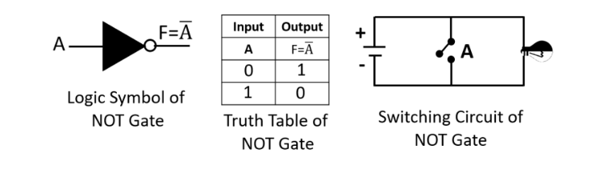
সার্বজনীন গেইট (Universal Gate) (NOR ও NAND)
বিশেষ গেট (X-OR ও X-NOR)
NAND ও NOR গেইটকে কে সার্বজনীন গেইট বলা হয়।
কারণ শুধুমাত্র NOR গেইট বা NAND গেইট দিয়ে মৌলিক গেইট সহ যেকোনো লজিক গেইট বা সার্কিট বাস্তবায়ন করা যায়।
সার্বজনীন গেইট তৈরিতে খরচ কম বিধায় ডিজিটাল সার্কিটে এই গেইট বেশি ব্যবহৃত হয়। 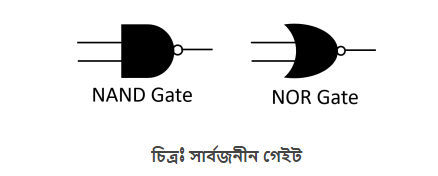
OR গেইটের আউটপুটকে NOT গেইটের মধ্য দিয়ে প্রবাহিত করলে NOR গেইট পাওয়া যায়।
OR গেইটের আউটপুটকে উল্টিয়ে দিলে NOR গেইটের আউটপুট পাওয়া যায়।
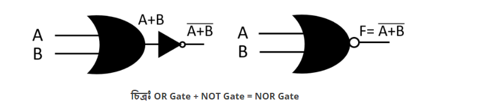
NOR গেইটে দুই বা ততোদিক ইনপুট লাইন থাকে এবং একটি মাত্র আউটপুট লাইন থাকে। NOR গেইট কে যৌগিক গেইট এবং সার্বজনীন গেইটও বলা হয়।

AND গেইটের আউটপুটকে NOT গেইটের মধ্য দিয়ে প্রবাহিত করলে NAND গেইট পাওয়া যায়।
অর্থাৎ AND গেইটের আউটপুটকে উল্টিয়ে দিলে NAND গেইটের আউটপুট পাওয়া যায়।
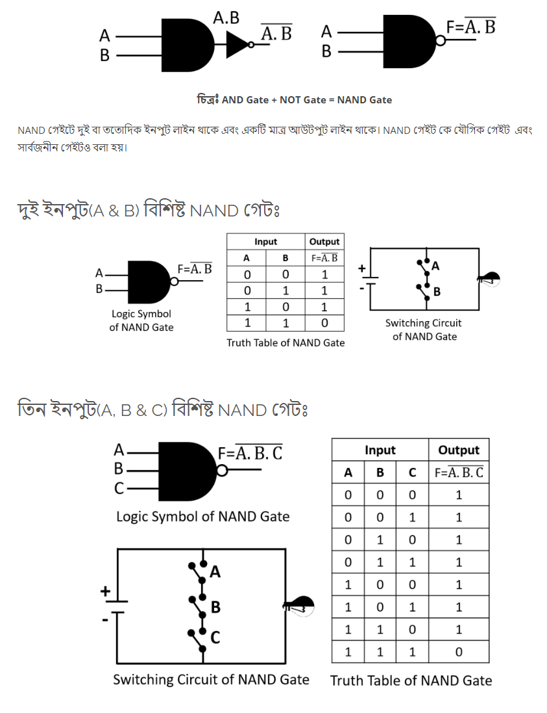

এটি একটি যৌগিক গেইট যা AND, OR ও NOT গেইটের সমন্বয়ে তৈরি।
এই গেইটের মাধ্যমে বিভিন্ন ইনপুট বিট তুলনা করে আউটপুট সংকেত পাওয়া যায়।
ইনপুটে বিজোড় সংখ্যক ১ থাকলে আউটপুট ১ হয়, অন্যথায় ০ হয়।
X-OR অপারেশনকে ⊕ চিহ্ন দ্বারা প্রকাশ করা হয়।
X-OR গেইটে দুই বা ততোধিক ইনপুট লাইন থাকে এবং একটি মাত্র আউটপুট লাইন থাকে।
X-OR গেইট কে যৌগিক গেইট এবং বিশেষ গেইটও বলা হয়।
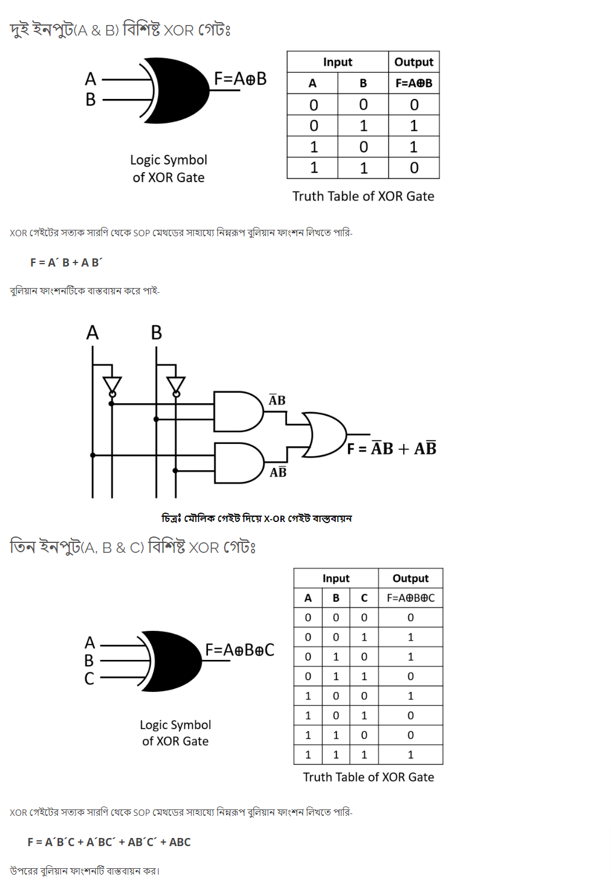
এটি একটি যৌগিক গেইট যা AND, OR ও NOT গেইটের সমন্বয়ে তৈরি।
X-OR গেইটের আউটপুট NOT গেইটের মধ্যে প্রবাহিত করলে X-NOR গেইট পাওয়া যায়।
অর্থাৎ X-OR গেইটের আউটপুটকে উল্টিয়ে দিলে X-NOR গেইটের আউটপুট পাওয়া যায়।
অর্থাৎ ইনপুটে বিজোড় সংখ্যক ১ থাকলে আউটপুট ০ হয়, অন্যথায় ১ হয়।
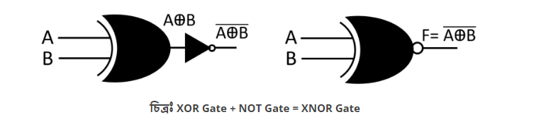
X-NOR গেইটে দুই বা ততোদিক ইনপুট লাইন থাকে এবং একটি মাত্র আউটপুট লাইন থাকে। X-NOR গেইট কে যৌগিক গেইট এবং বিশেষ গেইটও বলা হয়।
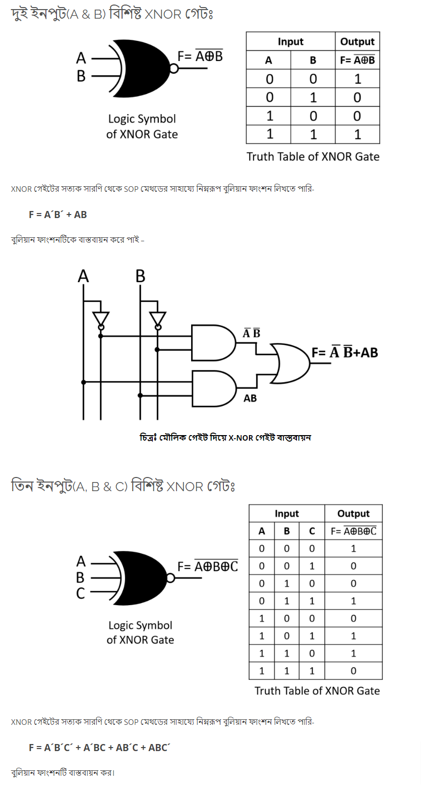
লজিক গেইট হল ডিজিটাল সার্কিটের বেসিক বিল্ডিং ব্লক বা মৌলিক উপাদান।
এটি একটি ইলেকট্রনিক সার্কিট যা এক বা একাধিক ইনপুট গ্রহণ এবং কেবল একটি আউটপুট দেয়।
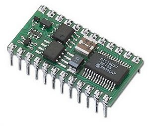
লজিক গেট প্রধানত ২ প্রকার ঃ
ক) মৌলিক লজিক গেইট ()
খ) যৌগিক লজিক গেইট ()
মৌলিক লজিক গেইট ঃ
যেসকল গেইট দ্বারা বুলিয়ান অ্যালজেবরার মৌলিক অপারেশনগুলো বাস্তবায়ন করা যায় তাদেরকে মৌলিক লজিক গেইট বলা হয়।
মৌলিক লজিক গেইটের সাহায্যে সকল যৌগিক গেইট ও যেকোন সার্কিট তৈরি করা যায়।
ডিজিটাল ইলেক্ট্রনিক্সে মৌলিক লজিক গেইট তিনটি। যথা-
অর গেট (OR Gate)
অর গেট হল যৌক্তিক যোগ এর (Logical Addition ) গেইট।অর্থাৎ বুলিয়ান অ্যালজেবরায় যৌক্তিক যোগের কাজ সম্পাদনের জন্য যে গেইট ব্যবহার করা হয়, তাকে OR গেইট বলা হয়।
OR গেইটে দুই বা ততোধিক ইনপুট লাইন থাকে এবং একটিমাত্র আউটপুট লাইন থাকে।
যেহেতু OR গেইট যৌক্তিক যোগের গেইট তাই এটি যৌক্তিক যোগের নিয়ম মেনে চলে।
অর্থাৎ এই গেইটের ক্ষেত্রে যেকোনো একটি ইনপুটের মান ১ হলে আউটপুট ১ হয়, অন্যথায় ০ হয়।
OR গেইটের সুইচিং সার্কিটের সুইচগুলো সমান্তরালে সমবায়ে যুক্ত থাকে। ফলে যেকোন একটি সুইচ অন(1) থাকলে বাল্বটি জ্বলে।
অ্যান্ড গেট (AND Gate)
AND গেইট হল যৌক্তিক গুণের (Logical Multiplication) গেইট।অর্থাৎ বুলিয়ান অ্যালজেবরায় যৌক্তিক গুণের কাজ সম্পাদনের জন্য যে গেইট ব্যবহার করা হয়, তাকে AND গেইট বলা হয়।
AND গেইটের ক্ষেত্রে দুই বা ততোধিক ইনপুট লাইন থাকে এবং একটি মাত্র আউটপুট লাইন থাকে।
যেহেতু AND গেইট যৌক্তিক গুণের গেইট তাই এটি যৌক্তিক গুণের নিয়ম মেনে চলে।
অর্থাৎ এই গেইটের ক্ষেত্রে যেকোনো একটি ইনপুটের মান ০ হলে আউটপুট ০ হয়, অন্যথায় ১ হয়।
AND গেইটের সুইচিং সার্কিটের সুইচগুলো শ্রেণি সমবায়ে যুক্ত থাকে। ফলে যেকোন একটি অফ(0) থাকলে বাল্বটি জ্বলে না।
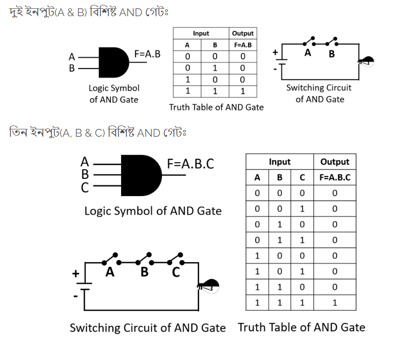
নট গেট (NOT Gate)
NOT গেইট হল যৌক্তিক পূরকের গেইট।একে ইনভার্টার ও বলা হয়।
অর্থাৎ বুলিয়ান অ্যালজেবরায় যৌক্তিক পূরকের কাজ সম্পাদনের জন্য যে গেইট ব্যবহার করা হয়, তাকে NOT গেইট বলা হয়।
এই গেইটে একটি মাত্র ইনপুট লাইন এবং একটি মাত্র আউটপুট লাইন থাকে।
যেহেতু NOT গেইট যৌক্তিক পূরকের গেইট তাই এটি যৌক্তিক পূরকের নিয়ম মেনে চলে।
এই গেইটের ক্ষেত্রে আউটপুট হয় ইনপুটের বিপরীত। অর্থাৎ ইনপুট সংকেত ১ হলে আউটপুট সংকেত ০ হয় অথবা ইনপুট সংকেত ০ হলে আউটপুট সংকেত ১ হয়।
NOT গেইটের সুইচিং সার্কিটে একটিমাত্র সুইচ থাকে যা বাল্ব এর সাথে সমান্তরাল সমবায়ে যুক্ত থাকে। ফলে সুইচটি অফ(0) থাকলে বাল্বটি জ্বলে কিন্তু সুইচটি অন(1) থাকলে বাল্বটি জ্বলে না।
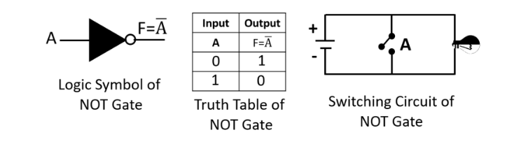
দুই বা ততোধিক মৌলিক গেইটের সাহায্যে যে গেইট তৈরি করা হয় তাকে যৌগিক গেইট বলে।
যেমন- AND Gate + NOT Gate = NAND Gate
OR Gate + NOT Gate = NOR Gate
যৌগিক গেইটকে দুই ভাগে ভাগ করা যায়। যেমন-
Universal Gate (সার্বজনীন গেট)
যে গেইট এর সাহায্যে মৌলিক গেইট সহ (AND,OR,NOT) যেকোন গেইট এবং যেকোন সার্কিট বাস্তবায়ন করা যায় তাকে সার্বজনীন গেইট বলে।NAND ও NOR গেইটকে কে সার্বজনীন গেইট বলা হয়।
কারণ শুধুমাত্র NOR গেইট বা NAND গেইট দিয়ে মৌলিক গেইট সহ যেকোনো লজিক গেইট বা সার্কিট বাস্তবায়ন করা যায়।
সার্বজনীন গেইট তৈরিতে খরচ কম বিধায় ডিজিটাল সার্কিটে এই গেইট বেশি ব্যবহৃত হয়। 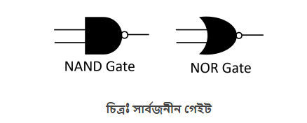
নর গেট (NOR Gate)
NOR গেইট একটি যৌগিক গেইট যা OR গেইট ও NOT গেইটের সমন্বয়ে তৈরি।OR গেইটের আউটপুটকে NOT গেইটের মধ্য দিয়ে প্রবাহিত করলে NOR গেইট পাওয়া যায়।
OR গেইটের আউটপুটকে উল্টিয়ে দিলে NOR গেইটের আউটপুট পাওয়া যায়।
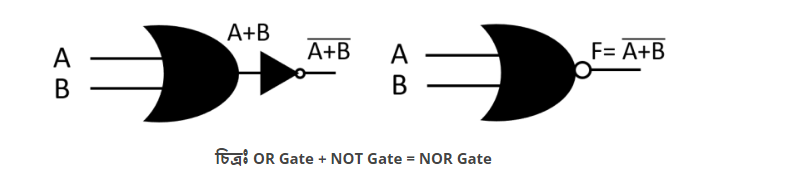
NOR গেইটে দুই বা ততোদিক ইনপুট লাইন থাকে এবং একটি মাত্র আউটপুট লাইন থাকে। NOR গেইট কে যৌগিক গেইট এবং সার্বজনীন গেইটও বলা হয়।
ন্যান্ড গেট (NAND Gate)
NAND গেইট একটি যৌগিক গেইট যা AND গেইট ও NOT গেইটের সমন্বয়ে তৈরি।AND গেইটের আউটপুটকে NOT গেইটের মধ্য দিয়ে প্রবাহিত করলে NAND গেইট পাওয়া যায়।
অর্থাৎ AND গেইটের আউটপুটকে উল্টিয়ে দিলে NAND গেইটের আউটপুট পাওয়া যায়।
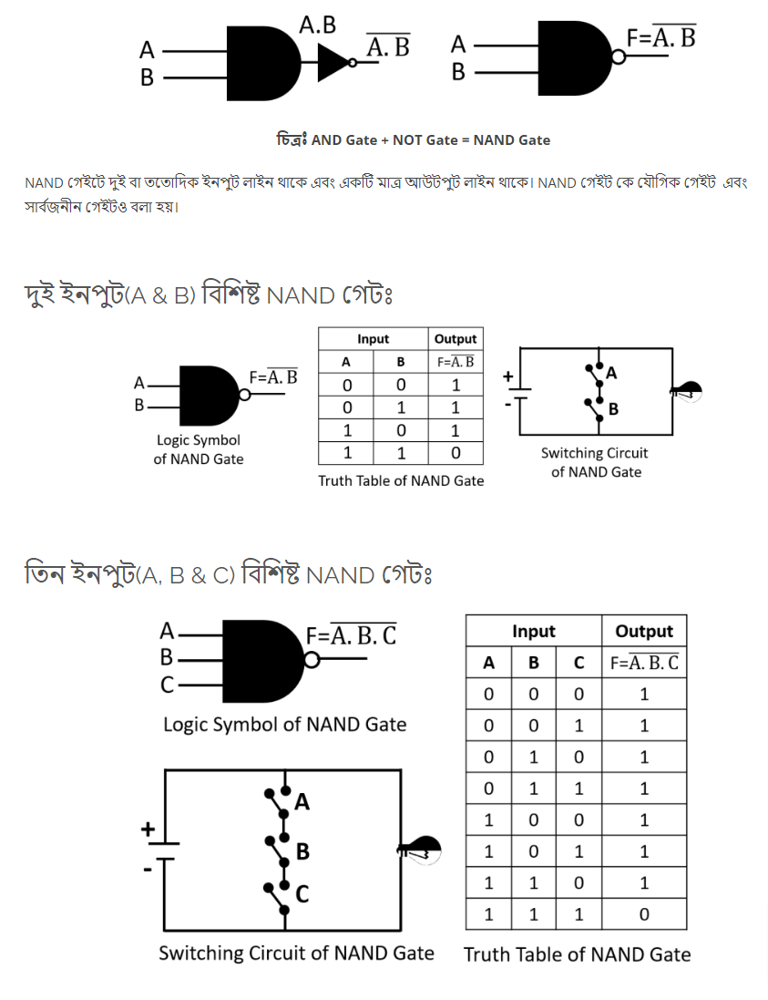
বিশেষ গেট
X-OR ও X-NOR গেইট দুটিকে বলা হয় বিশেষ গেইট।X-OR গেট
Exclusive OR গেইটকে সংক্ষেপে X-OR গেইট বলা হয়।এটি একটি যৌগিক গেইট যা AND, OR ও NOT গেইটের সমন্বয়ে তৈরি।
এই গেইটের মাধ্যমে বিভিন্ন ইনপুট বিট তুলনা করে আউটপুট সংকেত পাওয়া যায়।
ইনপুটে বিজোড় সংখ্যক ১ থাকলে আউটপুট ১ হয়, অন্যথায় ০ হয়।
X-OR অপারেশনকে ⊕ চিহ্ন দ্বারা প্রকাশ করা হয়।
X-OR গেইটে দুই বা ততোধিক ইনপুট লাইন থাকে এবং একটি মাত্র আউটপুট লাইন থাকে।
X-OR গেইট কে যৌগিক গেইট এবং বিশেষ গেইটও বলা হয়।
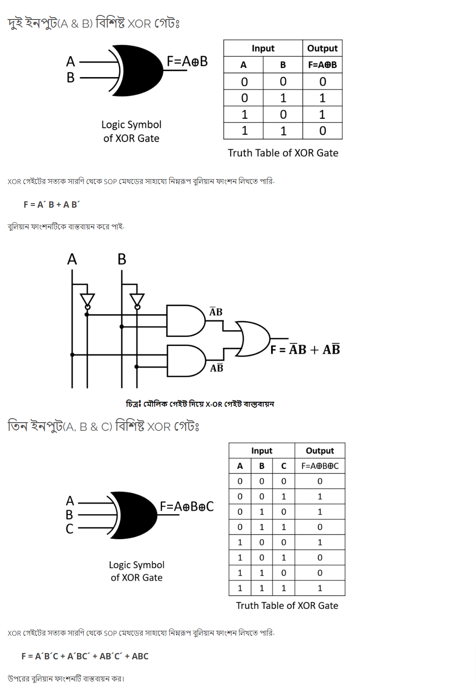
X-NOR গেট
Exclusive NOR গেইটকে সংক্ষেপে X-NOR গেইট বলা হয়।এটি একটি যৌগিক গেইট যা AND, OR ও NOT গেইটের সমন্বয়ে তৈরি।
X-OR গেইটের আউটপুট NOT গেইটের মধ্যে প্রবাহিত করলে X-NOR গেইট পাওয়া যায়।
অর্থাৎ X-OR গেইটের আউটপুটকে উল্টিয়ে দিলে X-NOR গেইটের আউটপুট পাওয়া যায়।
অর্থাৎ ইনপুটে বিজোড় সংখ্যক ১ থাকলে আউটপুট ০ হয়, অন্যথায় ১ হয়।
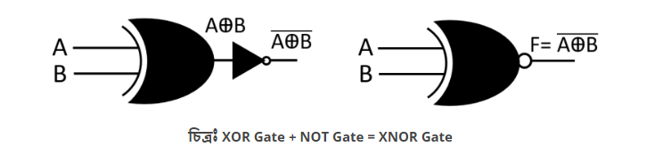
X-NOR গেইটে দুই বা ততোদিক ইনপুট লাইন থাকে এবং একটি মাত্র আউটপুট লাইন থাকে। X-NOR গেইট কে যৌগিক গেইট এবং বিশেষ গেইটও বলা হয়।
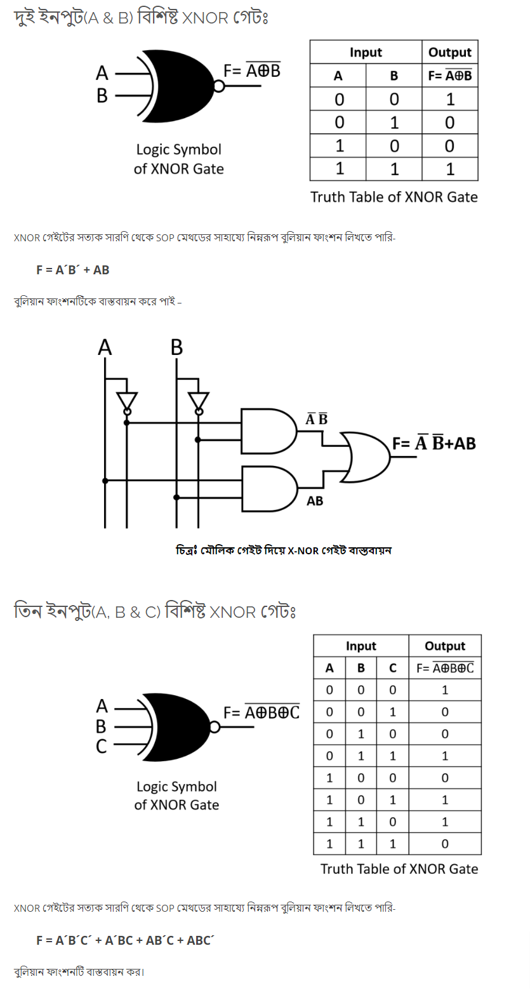
মৌলিক উপপাদ্য (Basic Theorem)
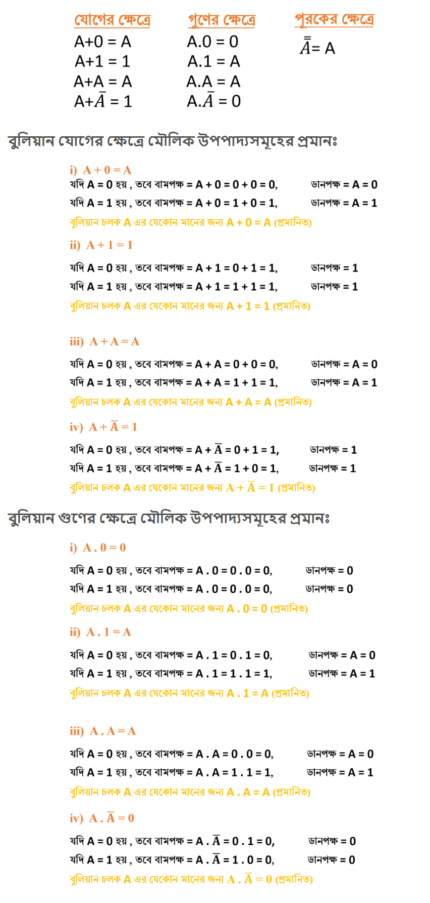বিভিন্ন উপপাদ্য (Mixed Theorem)
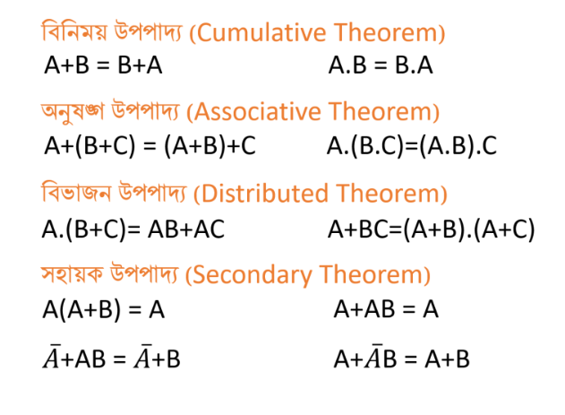ডি মরগ্যানের উপপাদ্য (De Morgan's Theorem)
ফরাসি গণিতবিদ ডি মরগ্যান, বুলিয়ান ফাংশন সরলীকরণ করার জন্য দুটি সূত্র আবিষ্কার করেন।

ডি মরগ্যানের উপপাদ্য প্রমান (De Morgan's Theorem Proof)
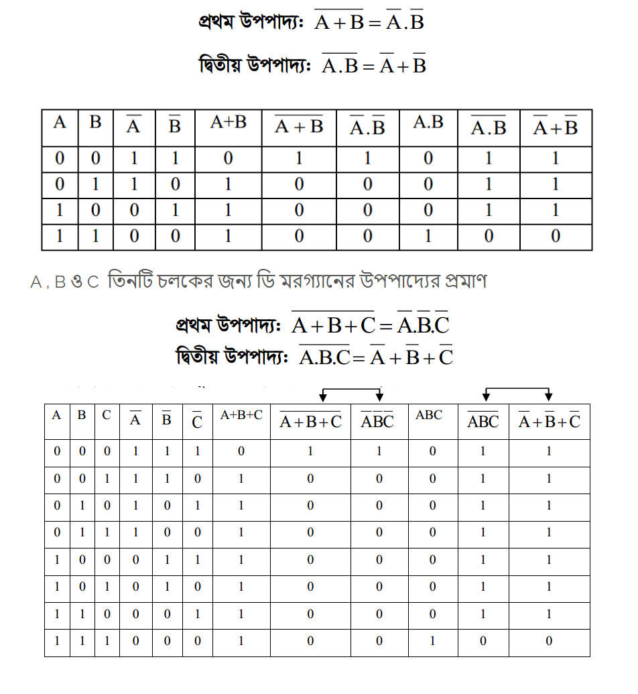?
?